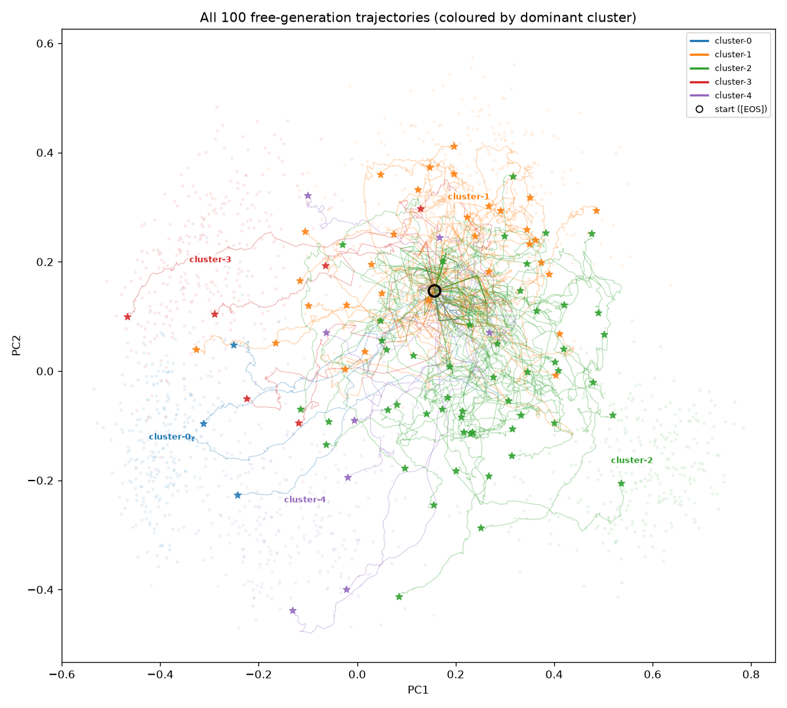

100 free generations from P_mix. For each: posterior γ vs probe β curves, the prefix-embedding trajectory through the PCA of the real-D_i clusters, and the completion text highlighted by γ / r / argmax-by-γ.

page 1 page 2 page 3 page 4 page 5
Background intensity = (value − chance)/(1 − chance), chance = 1/5 ≈ 0.20 (uniform prior over the 5 components). Transparent = at-or-below chance; saturated = the component is certain about that token.
Component colours: cluster-0cluster-1cluster-2cluster-3cluster-4